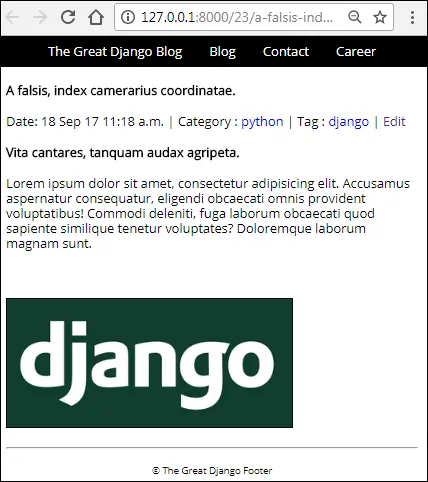

Integrating CKeditor in Django
Last updated on July 27, 2020
CKEDITOR_CONFIGS refer to the settings which CKEditor uses to customize its appearance and behavior. To learn more about settings visit CKEditor configuration (http://docs.ckeditor.com/#!/guide/dev_configuration).
At this point, we are using HTML <textarea> element to create content. It has following drawbacks:
- We are unable to format content.
- No support for images.
One way to solve these problems is to type HTML code directly into the <textarea> element and then print the content using the safe filter in the template. Recall that by default, for security reasons Django escapes the content of the variable, the safe filter tells Django that content is safe and does not require HTML escaping.
But the problem is nobody likes to type HTML. Further, from the usability point of view, our site would be useless for users who don't know HTML. That is unacceptable.
What we need is a WYSIWYG HTML editor.
WYSIWYG ("what you see is what you get") HTML editor allows to format content easily by providing an interface similar for Microsoft Word. To use a WYSIWYG editor just select the formatting you want and editor will automatically create valid HTML markup.
There are many WYSIWYG editors out there like TinyMCE, Froala, CKEditor etc. In our project, we are going to use CKEditor.
Fortunately, there is a package called Django CKEditor, which allows us to integrate CKEditor into Django easily.
After integrating Django CKEditor we will have a Rich Text Editor with image uploading capability instead if boring <textarea> element.
Installing Django CKEditor #
In terminal or command prompt and enter the following command to install Django CKEditor.
(env) C:\Users\Q\TGDB\django_project>pip install django-ckeditorOpen settings.py file and add 'ckeditor' and 'ckeditor_uploader' to INSTALLED_APPS list as follows:
TGDB/django_project/django_project/settings.py
1 2 3 4 5 6 7 8 9 10 11 12 13 14 15 16 17 | #...
INSTALLED_APPS = [
'django.contrib.admin',
'django.contrib.auth',
'django.contrib.contenttypes',
'django.contrib.sessions',
'django.contrib.messages',
'django.contrib.staticfiles',
'django.contrib.flatpages',
'django.contrib.sites',
'django.contrib.sitemaps',
'ckeditor',
'ckeditor_uploader',
'blog',
'cadmin'
]
#...
|
At the end of settings.py file add the following configuration:
TGDB/django_project/django_project/settings.py
1 2 3 4 5 6 7 8 9 10 11 12 13 14 15 16 17 18 19 | #...
SITE_ID = 1
####################################
## CKEDITOR CONFIGURATION ##
####################################
CKEDITOR_JQUERY_URL = 'https://ajax.googleapis.com/ajax/libs/jquery/2.2.4/jquery.min.js'
CKEDITOR_UPLOAD_PATH = 'uploads/'
CKEDITOR_IMAGE_BACKEND = "pillow"
CKEDITOR_CONFIGS = {
'default': {
'toolbar': None,
},
}
###################################
|
Here is a rundown of each property we have used above:
CKEDITOR_JQUERY_URL refers to the jquery file which CKEditor uses.
CKEDITOR_UPLOAD_PATH refers the directory where images will be uploaded relative to your MEDIA_ROOT. Recall the we already set MEDIA_ROOT to os.path.join(BASE_DIR, 'media'). So the image files will be uploaded to media/euploads directory. You don't need to create uploads directory it will be created automatically for you.
CKEDITOR_IMAGE_BACKEND refers to the image library which CKEditor uses to create thumbnails to display in CKEditor gallery.
CKEDITOR_CONFIGS refer to the settings which CKEditor uses to customize its appearance and behavior. To learn more about settings visit CKEditor configuration.
Before we go ahead further, let's install pillow library which django-ckeditor will use to create thumbnails.
(env) C:\Users\Q\TGDB\django_project>pip install pillowAt last, add django-ckeditor URLs to sitewide urls.py file.
TGDB/django_project/django_project/urls.py
1 2 3 4 5 6 7 | #...
urlpatterns = [
url(r'', include('blog.urls')),
url(r'^admin/', admin.site.urls),
url(r'^cadmin/', include('cadmin.urls')),
url(r'^ckeditor/', include('ckeditor_uploader.urls')),
] + static(settings.MEDIA_URL, document_root=settings.MEDIA_ROOT)
|
Django CKEditor Usage #
Django CKEditor provides the following two ways to integrate Rich Text Editor:
- Using Model Fields.
- Using Form Widgets.
Model Fields #
There are two types of model fields RichTextField and RichTextUploadingField. The RichTextField only adds a rich text editor without image uploader while RichTextUploadingField field adds a rich text editor with image uploader.
To use RichTextField or RichTextUploadingField replace models.TextField() with RichTextField or RichTextUploadingField field. For example:
1 2 3 4 5 | from ckeditor_uploader.fields import RichTextField, RichTextUploadingField
class ModelClass:
## content = models.TextField()
content = RichTextUploadingField()
|
Form widgets #
Django CKEditor also provides CKEditorWidget and CKEditorUploadingWidget widgets which adds rich text editor without image uploader and a rich text editor with image uploader respectively.
To use them, just pass CKEditorWidget or CKEditorUploadingWidget to the widget keyword argument as follows:
1 2 3 4 | from ckeditor_uploader.widgets import CKEditorWidget, CKEditorUploadingWidget
class PostForm(forms.ModelForm):
content = forms.CharField(widget=CKEditorUploadingWidget())
|
Rendering CKEditor outside of Django Admin #
It doesn't matter which method you use if you are rendering CKEditor outside of Django Admin you will have to make sure all the necessary JavaScript files used by CKEditor are available in your templates. One way to achieve this is to use form.media variable in your templates:
1 2 3 4 5 | <form>
{{ form.media }}
{{ form.as_p }}
<input type="submit"/>
</form>
|
or load individual files manually as follows:
1 2 3 4 | {% load static %}
<script type="text/javascript" src="https://ajax.googleapis.com/ajax/libs/jquery/2.2.4/jquery.min.js"></script>
<script type="text/javascript" src="{% static "ckeditor/ckeditor-init.js" %}"></script>
<script type="text/javascript" src="{% static "ckeditor/ckeditor/ckeditor.js" %}"></script>
|
Now you should have a good understanding of django-ckeditor package. Let's integrate it in our project.
Updating Model Fields #
Open blog's app models.py file and change the type of content field in Post model to RichTextUploadingField(), as follows:
TGDB/django_project/blog/models.py
1 2 3 4 5 6 7 8 9 10 11 12 | #...
from django.contrib.auth.models import User
from ckeditor_uploader.fields import RichTextUploadingField
#...
class Post(models.Model):
title = models.CharField(max_length=200)
slug = models.SlugField(max_length=200, help_text="Slug will be generated automatically from the title of the post")
content = RichTextUploadingField()
pub_date = models.DateTimeField(auto_now_add=True)
#...
|
In the Django Admin, visit Add post/Change post page and you will be presented a page that looks like this:
We are seeing is CKEditor is action. Now you have full capability to format posts to your heart's content. Add some paragraphs of text and heading. To add images to post click on image icon on the left side, just above "Styles" dropdown and you will see a pop-up window like this:
Click the "Browse Server" button, this will open CKEditor Image Gallery which allows us to view uploaded images as well as add images to the post. To add an image into the post, select it and click on "Embed Image" button at the bottom of the window.
In case, you haven't uploaded any images, then CKEditor Image Gallery will look like this:

We can also upload an image from the hard drive. To do so, click on the "Upload" tab. Select file and Click "Send it to the Server".
You will be taken back to Images Info tab. Click OK to add an image to the post. Save the post by clicking "Save and continue editing".
To view the post click on the "VIEW ON SITE" link at the top right corner of the page and you see a page like this:
What's going on?
As we already know, by default, Django escapes HTML because of security concerns. We can tell Django not to escape data by using safe filter. Open post_details.html in the blog directory and change post.content to post.content|safe.
TGDB/django_project/blog/templates/blog/post_detail.html
1 2 3 4 5 | {#...
<p>
{{ post.content|safe }}
</p>
{#...
|
Revisit the post we created above. This time you should see properly formatted HTML as follows:

Adding CKEditor Media Files to cadmin #
At this point, CKEditor is working as Expected in Django Admin. But if you login to cadmin and visit on Add Post/Update Post page, you will find that CKEditor is not showing up.
The problem is that necessary JavaScript files used by CKEditor are not available in our custom admin panel. To add these files, we have to use form.media template variable to our templates.
Open cadmin's, post_add.html and post_update.html template and update the code as follows:
TGDB/django_project/cadmin/templates/cadmin/post_add.html
1 2 3 4 5 6 7 8 | {# ... #}
<form action="" method="post">
{% csrf_token %}
{{ form.media }}
<table>
{# ... #}
</form>
{# ... #}
|
TGDB/django_project/cadmin/templates/cadmin/post_update.html
1 2 3 4 5 6 7 8 | {# ... #}
<form action="" method="post">
{% csrf_token %}
{{ form.media }}
<table>
{# ... #}
</form>
{# ... #}
|
Visit Add Post and Post Update page. This time CKEditor should be visible in both the pages.
By Default, Django CKEditor only allows staff members (i.e is_staff=True) to upload and browse images. All the users created via http://127.0.0.1:8000/cadmin/register/ have is_staff attribute set to False, which means that they can't upload or browse images using CKEditor. If you try to browser or upload image using a non-staff account in cadmin you will get a warning like this:
As you can see, Django is asking you to login with a different account, the one with staff privilege i.e is_staff=True.
There are two ways to solve this problem:
set
is_staffattribute toTrueevery time a new user is created (recommended approach).Change the source code if django-ckeditor package to allow every registered user to upload image irrespective of the value of
is_staffattribute (not recommended because it may break your application after every update).
Let's start with the first one.
To set is_staff to True, open cadmin's views.py, and update register() view as follows:
TGDB/django_project/cadmin/views.py
1 2 3 4 5 6 7 8 9 10 11 | def register(request):
#...
if not error:
u = User.objects.create_user(
request.POST['username'],
request.POST['email'],
request.POST['password1'],
is_active = 0,
is_staff = True
)
#...
|
This update will only be applied to newly created users. To update the is_staff attribute of all existing user created via Create User Form (i.e http://127.0.0.1:8000/cadmin/register/) execute the following commands in Django shell:
1 2 3 4 5 6 7 8 | >>>
>>> authors = Author.objects.filter(activation_key__isnull=False)
>>>
>>> for a in authors:
... a.user.is_staff = True
... a.user.save()
...
>>>
|
You could also use Django Admin to do the above task.
It is important to note that setting is_staff attribute to True allows non-staff members to login into the Django Admin but doesn't give any extra permission to do anything. In other words, after logging in the user will not be able to perform any changes in the Django Admin at all. To verify this fact login to Django Admin (http://127.0.0.1:8000/admin/) using a non-staff account and you will be displayed a page like this:
As you can see, the logged in user doesn't have permission to perform any action, which is what we want. On the other hand, in the cadmin he can now upload images and edit anything object which he created himself.
Another way to solve this problem is to change the source code of django-ckeditor. The django-ckeditor uses staff_member_required decorator which checks whether the logged in user is a staff member or not. staff_member_required only triggers the views when logged in user is a staff member. To allow any logged in user to browse and upload images replace staff_member_required with login_required.
1 2 3 4 5 6 7 8 9 10 11 12 13 14 15 16 17 | #...
from django.contrib.admin.views.decorators import staff_member_required, login_required
if django.VERSION >= (1, 8):
urlpatterns = [
# Custom
#
url(r'^upload/', login_required(views.upload), name='ckeditor_upload'),
url(r'^browse/', login_required(views.browse), name='ckeditor_browse'),
# Default
#
# url(r'^upload/', staff_member_required(views.upload), name='ckeditor_upload'),
# url(r'^browse/', never_cache(staff_member_required(views.browse)), name='ckeditor_browse'),
]
#...
|
You should not change the original code directly instead make a copy and comment out the original code and then make changes on the copy as required.
That's all there is to it. You should now have a pretty good understanding of Django Framework. I hope you enjoyed it.
Note: To checkout this version of the repository type git checkout 37a.
Load Comments